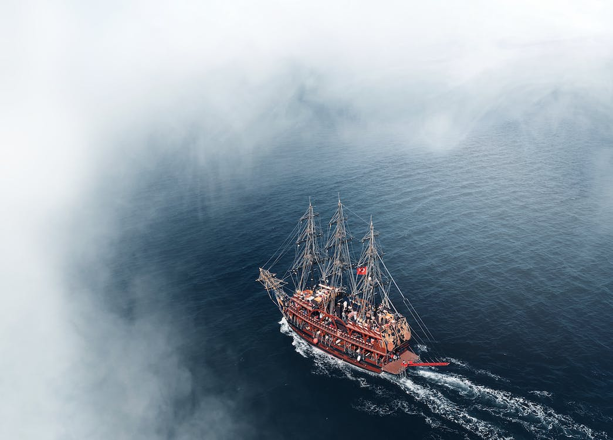

Eu não achei que fosse voar tão alto,
Depois de ouvir todos os conselhos de Peter e sininho, encontrarmos os meninos perdidos que me mostraram cada cantinho da terra do nunca, onde tudo ficava e do que tudo era feito, e novamente me senti perplexa com a linda forma que o mundo era feito, confesso que tive medo de me tornar um deles pois pretendia voltar para a casa, foi divertido pois tudo parecia um sonho, até mesmo quando encontrei com os índios que lá moravam, descobri histórias novas que terei que contar para todos quando eu voltar para casa, me ensinaram valores e me proporcionaram momentos que nunca irei esquecer.
Eu achei que aprender tudo isso não era muito necessário pois não ficaria por lá muito tempo, até que capitão gancho decidiu invadir o território em que os índios moravam, tomando a princesa e a capturando, e logo depois incendiando toda a área, e não demorou muito para irmos ajudar, Peter foi a busca da princesa, e eu e os meninos perdidos fomos apagar o fogo que destruía tudo o que por perto estava. A princesa foi salva, mas as casa frágeis não se recuperaram, foi muito esforço e trabalho de todos para reconstruir todas as moradas. Depois de horas naquele mundo, me senti acolhida por estar lá e poder ajudar, até que novamente o território é atacado, e dessa vez ameaçando jogar ao rio quem tentasse ajudá-los. Peter, eu e os meninos não deixamos barato, após atearem fogo em todas as casas fomos com baldes de água apagá lo,eu senti meus braços adormecer, mas não pararia de ajudá-los .
E como disse, capitão gancho foi a perseguição daqueles que ajudaram, todos que da terra do nunca pertenciam, já sabiam bem onde se esconder, foi então que fui capturada pois o medo controlou totalmente o meu corpo. Os meninos foram me resgatar, mas falharam ao entrar dentro do barco, sendo capturados, sininho que viu toda a situação avisou ao Peter que depressa iria nos resgatar. E com apenas uma mão e um gancho, a batalha entre Peter pan e o capitão, foi longa, mas acabou com a vitória de Peter, enquanto isso presos no barco e prontos a ser jogado ao mar, eu e os meninos planejaram fugir de lá, o único caminho era nadar milhares de metros até terra firme,, foi então que chamamos sininho que fez uma magia a qual tic tac, o crocodilo do mar, adormeceu, e foi assim que nadamos até chegar a terra firme, a qual se encontramos com Peter que me levou para casa para que pudesse voltar a minha vida normal, mas antes uma grande festa fantástica não faria mal, lá estava Peter comemorando mais uma vitória, sininho a brilhar, os índios cantando e os meninos perdidos a qual dominaram toda a atenção da festança . Ao voltar para casa, certamente minha vida nunca mais será como antes, após essa grande viagem passei a passar sempre pela minha estrada favorita e olhar para o alto da maior árvore, à espera de que Peter me convide novamente para viajar para Terra do Nunca.
p. 